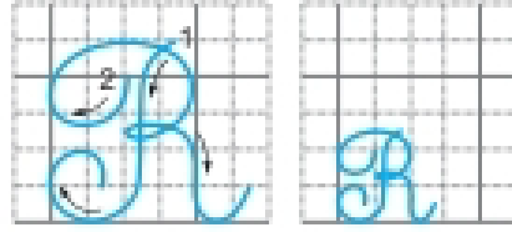

TIẾNG VIỆT TUẦN 20
Thời gian áp dụng: Từ ngày …………….. đến ngày …………………
TIẾNG VIỆT
CHỦ ĐỀ: VẺ ĐẸP QUANH EM
BÀI 3 : HỌA MI HÓT ( TIẾT 3)
VIẾT : CHỮ HOA R
I. YÊU CẦU CẦN ĐẠT:
Bài học góp phần giúp HS hình thành và phát triển:
1. Năng lực đặc thù
- Biết viết chữ viết hoa R cỡ vừa và cỡ nhỏ.
- Viết đúng câu ứng dựng: Rừng cây vươn mình đón nắng mai.
2.Năng lực:
- Hình thành các NL chung, phát triển NL ngôn ngữ, NL văn học. Rèn cho HS tính kiên nhẫn, cẩn thận.
3.Phẩm chất:
- Yêu nước, chăm chỉ, trách nhiệm, nhân ái.
*HSKT: Viết 2 dòng chữ R, 1 dòng câu ứng dụng.
II. ĐỒ DÙNG DẠY HỌC:
- Giáo viên: SGK, slide trình chiếu nội dung bài học.
- HS: Vở Tập viết; bảng con.
III. CÁC PHƯƠNG PHÁP, KĨ THUẬT DẠY HỌC, PP ĐÁNH GIÁ
IV. CÁC HOẠT ĐỘNG DẠY HỌC
Hoạt động của giáo viên | Hoạt động của học sinh |
1. Khởi động: GV yêu cầu hs hát bài : Bà còng - Cho HS quan sát mẫu chữ hoa. - Gv hỏi đây là mẫu chữ hoa gì? - GV dẫn dắt, giới thiệu bài. 2.Khám phá; * Hoạt động 1: Viết chữ hoa - GV cho hs quan sát chữ viết hoa R và hỏi độ cao, độ rộng, các nét và quy trình viết chữ hoa R - GV tổ chức cho HS nêu: + Độ cao, độ rộng chữ hoa R. + Chữ hoa R gồm mấy nét? - GV chiếu video HD quy trình viết chữ hoa R. - GV viết mẫu trên bảng lớp .  - Gv viết mẫu : - Nét 1: Đặt bút trên đường kẻ thứ 6,hơi lượn bút sang trái viết nét móc ngược trái ,( đầu móc cong vào phía trong ) dừng bút trên đường kẻ thứ 2 . - Nét 2: Từ điểm dùng bút của nét 1,lia bút lên đường kẻ 5(bên trái nét móc ) viết nét cong trên ,cuối nét lượn vào giữa thân chữ tạo thành vòng xoắn nho giữa đường kẻ 3 và 4 rồi viết tiếp nét móc ngược phải , dừng bút trên đường kẻ thứ 2 . - GV thao tác mẫu trên bảng con, vừa viết vừa nêu quy trình viết từng nét. - GV hỗ trợ HS gặp khó khăn. - GV hướng dẫn hs tự nhận xét và nhận xét bài bạn . - Nhận xét, động viên HS. - GV yêu cầu hs viết chữ R hoa (chữ cỡ vừa và chữ cở nhỏ ) vào vở. * Hoạt động 2: Hướng dẫn viết câu ứng dụng “ Rừng cây vươn mình đón nắng mai ” - Gọi HS đọc câu ứng dụng cần viết. - GV viết mẫu câu ứng dụng trên bảng, lưu ý cho HS: - GV hướng dẫn hs viết chữ hoa R đầu câu câu . + Cách viết chữ hoa R. Nét 1: Nét 1 của chữ ư tiếp liền với điểm kết thúc ở nét 3 của chữ hoa R. + Cách nối từ R sang ư. + Khoảng cách giữa các con chữ ghi tiếng trong câu bằng khoảng cách viết chữ cái o . - Độ cao của các chữ cái : chữ cái r ,h, đ cao mấy li ? - Chữ cao 1,5 li dưới đường kẻ ngang . - Các chữ còn lại cao mấy li ? - GV hướng dẫn : Cách đặt dấu thanh ở các chữ cái :dấu sắc đặt trên chữ (nắng ) - GV hướng dẫn : vị trí đặt dấu chấm cuối câu:ngay sau chữ cái i trong tiếng mai . * Hoạt động 3: Thực hành luyện viết. - YC HS thực hiện luyện viết chữ hoa R và câu ứng dụng vào vở Luyện viết. - GV quan sát, hỗ trợ HS gặp khó khăn. - GV yêu cầu hs đổi vở cho nhau để phát hiện lỗi và góp ý cho nhau theo cặp đôi . - Nhận xét, đánh giá bài HS. 3. Vận dụng. - Hôm nay chúng ta viết chữ hoa gì? - Nêu cách viết chữ hoa R. - GV nhận xét giờ học. - Xem lại bài và chuẩn bị bài sau . |
- HS hát bài : Bà còng - Quan sát mẫu chữ hoa - HS trả lời - Hs lắng nghe
- Hs quan sát
- Hs quan sát
- Chữ R vừa cao 5 li ,chữ cỡ nhỏ cao 2,5 li. - Chữ R gồm 2 nét .Nét 1 giống nét 1 của chữ viết hoa B và chữ viết hoa P,nét 2 là kết hợp của 2 nét cơ bản ,nét cong trên và nét móc ngược phải nối liền với nhau tạo thành vòng xoắn ở giữa .
- HS quan sát.
- HS quan sát, lắng nghe.
- HS thực hiện luyện viết bảng con chữ hoa R .
- HS nhận xét và nhận xét bài bạn .
- HS viết chữ hoa R chữ cỡ vừa và chữ cở nhỏ vào vở
- HS đọc câu ứng dụng - HS quan sát cách viết mẫu trên màn hình.
- HS lắng nghe
- Chữ r,h,đ cao 2,5 li - Các chữ còn lại cao 1 li
- HS viết vào vở . - HS đổi vở cho nhau để phát hiện lỗi và góp ý cho nhau theo cặp đôi .
- Hôm nay chúng ta viết chữ hoa R . - Hs nêu quy trình viết chữ R hoa . |
IV.ĐIỀU CHỈNH SAU BÀI DẠY:
Bài học hôm nay học sinh đã tiếp thu được nội dung của bài học.